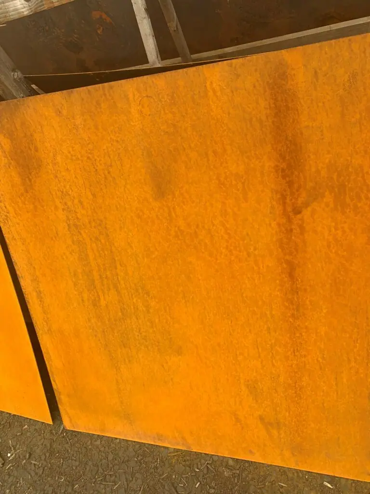

Corten Steel Splashbacks
A splashback isn’t just a practical way to protect a wall, it can be an architectural or decorative statement piece. That’s exactly what Corten steel splashbacks from Halman Thompson are designed to be. Practical, stain resistant and hard wearing, but also beautiful to look at and fit for any interior design! Each Corten steel splashback will be designed and made by hand, to order. Just tell us the size, shape and finish and we’ll take care of the rest! We’ll create your splashback and deliver it to your door ready to fit.

Please note: our pieces are suitable for use behind non-steam cookers only. It is important that the material is not exposed to direct contact with steam or excessive heat, as this will damage the surface finish.
Contact Halman Thompson or complete the quote form for a bespoke Corten steel splashback quotation!
Choose a finish


Cut to size
Each of our bespoke finishes can be purchased in sheets cut to your size, perfect for your project.
- Pricing includes delivery and turnaround time is just 5-8 weeks
- Each piece is coated in a gloss finish lacquer that prevents the sheet from further aging

Ready to go
We can provide bespoke cut metal with each of our finishes being wrapped around wood and lacquer finished. Please get in touch for a bespoke quote .
Handcrafted Corten Steel Splashbacks
Corten steel is also known as weathered steel thanks to its rustic, rusted look.
That layer of rust is very thin and actually forms a protective layer to protect the metal. It’s partly why Corten steel is so popular and used everywhere, from the Angel of the North to garden sculptures.
You can use it in your kitchen or food preparation area too!
You’ll often see Corten steel splashbacks in upmarket bars and restaurants, outdoor kitchens, as statement pieces at flower shows and anywhere you want something a little different.
BESPOKE CORTEN STEEL SPLASHBACKS
Every Corten steel splashback is created by hand, to order.
It begins life as a sheet of steel which we laser cut to the exact dimensions you order.
We then artificially age the steel to deliver that signature rusty look. Once it reaches the depth of colour you’re looking for, we halt the process and secure the steel within tough, transparent lacquer.
We will then dispatch your Corten steel splashback to you ready for installation.
The maximum sheet size for Corten steel splashbacks is 2000mm x 1000mm. We can create larger installations using multiple sheets if required.
We would cut and prepare them at the same time, in the same way to deliver a cohesive look between all pieces. It’s something we have a lot of experience doing.
CARING FOR YOUR CORTEN STEEL SPLASHBACKS
Another key quality of our Corten steel splashbacks is how easy they are to look after.
Simply wipe down with a clean cloth and warm soapy water. That’s it.
No special cloths, no specific cleaning solutions, just soap and water. The lacquer protects the splashback from stains, so that’s all you’ll need.
Full care instructions will be provided with your order.
Contact Halman Thompson or complete the quote form for a Corten steel splashback panel quotation!

Steel finishes
All 21 finishesIf you can dream it, we’ll make it.
Bars, balustrades, staircases, worktops, cladding and pieces that don’t have a name yet. Our designers and craftspeople work in brass, copper, zinc and steel, and alongside wood.